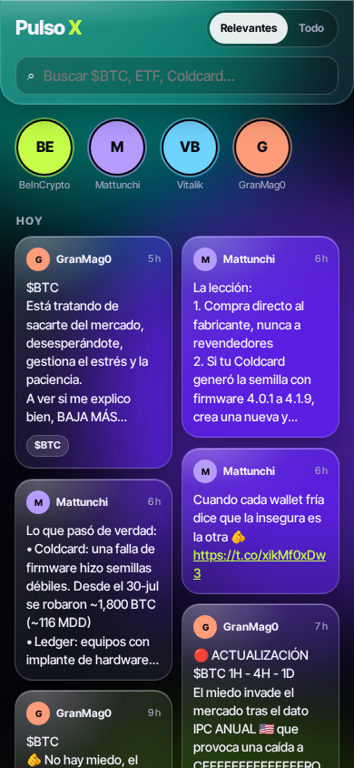
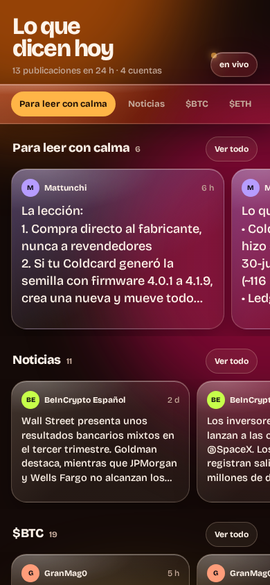
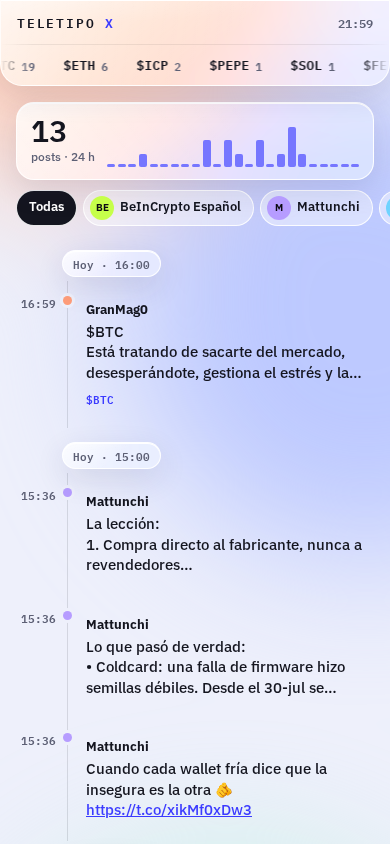
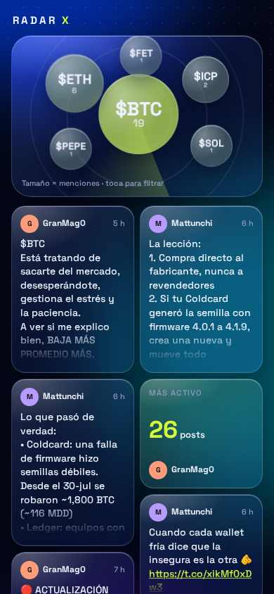

Feed de X · 4 propuestas
Mismos posts reales, cuatro formas de recorrerlos. Todas en vidrio líquido; ábrelas en el móvil.

A · Mosaico
Masonry de 2 columnas que se rellena sola, cuentas como historias y aurora verde y violeta. Toca una pieza y se abre la hoja.
Abrir A
B · Carriles
Filas que se deslizan en horizontal: para leer con calma, noticias, $BTC, $ETH, una línea, cada cuenta. Pestañas fijas. Vidrio ámbar.
Abrir B
C · Teletipo
Cronología por horas con teletipo de activos en movimiento y gráfico de actividad. La más densa: unos 6 posts por pantalla. Vidrio claro.
Abrir C
D · Radar
Radar de burbujas por menciones (toca para filtrar) y un bento que mezcla posts con piezas de datos. Azul profundo con lima.
Abrir D